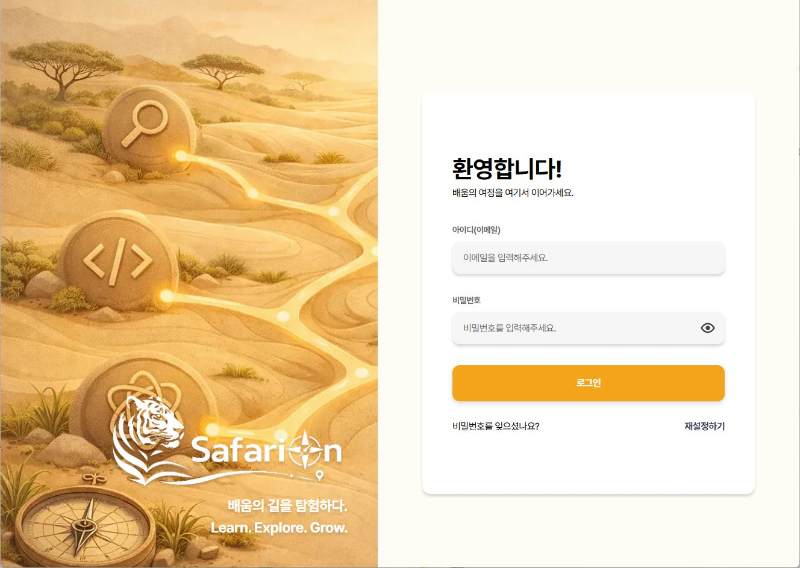

DAY 12026년 10월 6일(화)
동대문구시설관리공단 · 찾아가는 훈련
AX 레시피 · 에이전트 구축
현장의 문제를
AI 에이전트로
직접 풀어 봅니다
[AX 레시피 - 에이전트 구축] 현장의 문제를 해결하는 AI 에이전트 설계 및 구축 실무
반복되는 현장 업무를 에이전트 작업 단위로 나누고, 직접 구축·테스트한 뒤 검수와 권한 관리까지 이어지는 2일 실습 과정입니다.
- 일정
- 10월 6일(화)–7일(수)
- 교육 시간
- 09:00–18:00
- 총 시간
- 16시간 · 2일
교육 장소 서울특별시 동대문구 회기로 47 글로벌지식협력단지 교육동 3층 재스민실
- DAY 1 · DAY 210.6(화) – 10.7(수)
- TIME09:00–18:00
- ROOM교육동 3층 재스민실
- TOTAL16H · 16교시
교육 전 할 일SafariON 로그인 & 교안 확인
교육 전 준비 · SafariON
교육 전에 SafariON 로그인과
교안 확인을 마쳐 주세요.
강의 교안은 학습 플랫폼 SafariON에서 확인합니다. 제출하신 메일로 SafariON 초대 메일이 전달됩니다.
-
1
초대 메일 확인
제출하신 메일함에서 SafariON 초대 메일을 찾아 열어 주세요.
-
2
SafariON 로그인
메일의 “SafariON 바로가기” 버튼을 눌러 초대 메일 안내에 따라 로그인하고, 서비스 이용 약관에 동의하면 로그인이 완료됩니다.
링크가 열리지 않나요? 버튼을 눌러도 로그인 페이지로 이동하지 않으면, 메일에 첨부된 링크를 그대로 복사해 브라우저 주소창에 붙여 넣어 주세요.
-
3
교육 시작 · 교안 확인
홈 화면의 [알림] 창에서 교육 [시작]을 누르면 왼쪽 [최근 학습 현황]에 교육이 활성화됩니다. [시작하기]를 눌러 강의 교안을 확인하세요.
교안은 전체 화면으로 확대하거나 PDF로 내려받을 수 있고, 강의 목차에서 모듈별 섹션과 교안을 볼 수 있습니다.

비밀번호를 모르거나 바꾸고 싶다면
- 로그인 페이지(safarion.app)로 이동
- 로그인 화면 하단 “재설정하기” 클릭
- 가입한 이메일 입력 → 인증번호 요청·인증
- 인증 완료 후 원하는 비밀번호로 재설정
2일10.6 – 10.7
16H총 교육 시간
16교시하루 8교시
6개학습 모듈
과정 소개
답하는 AI에서
일하는 에이전트로.
단순 AI 응답 도구와 자율 실행 에이전트의 차이를 이해하고, 반복 업무를 목적·입력·처리 기준·출력 형식으로 분해해 직접 에이전트를 만듭니다. 만든 에이전트는 실제 업무 데이터로 테스트하고, 검수 기준과 권한·보안 기준까지 정리합니다.
- 01환경 구성작업 공간·접근 환경
- 02구조 이해구성요소·동작 원리
- 03업무 설계작업 단위로 변환
- 04구축 실습문제 기반 구현
- 05검수·개선운영 흐름 설계
- 06권한·확산거버넌스·배포
교시별 커리큘럼 · 총 16H
이틀 동안 6개 모듈을
차례로 실습합니다.
DAY 110월 6일(화) · 설계
011–2교시 · 09:00–10:50에이전트 실습 환경 구성
작업 공간·접근 환경 준비
- 클라우드 기반 에이전트 실습을 위한 계정과 작업 환경 구성
- 파일·문서·채널 등 업무 데이터 접근 방식과 연동 구조 이해
- 개인·공유·서버 실행 환경의 차이와 운영 방식 이해
023–5교시 · 11:00–14:50클라우드 기반 에이전트 구조 이해
구성요소·동작 원리 파악
- 단순 AI 응답 도구와 자율 실행 에이전트의 구조적 차이 이해
- 지시·참고 자료·도구·실행 흐름·산출물이 연결되는 방식 파악
- 에이전트에 위임할 업무와 사람이 직접 판단할 업무 구분
- 현장 업무 에이전트 설계 시 필요한 핵심 구성요소 파악
036–8교시 · 15:00–18:00현장 업무 에이전트 설계
반복 업무를 에이전트 작업 단위로 변환
- 실습반복 업무를 목적·입력·처리 기준·출력 형식으로 분해
- 실습문서 작성·정보 정리·내부 응대 등 업무 유형별 흐름 설계
- 실습명확한 지시와 모호한 지시의 결과 차이 비교·개선
- 실습재사용 가능한 업무 템플릿 구성
- 사람과 에이전트가 협업하는 지점(HITL) 이해
DAY 210월 7일(수) · 구축·운영
041–3교시 · 09:00–12:00에이전트 구축 실습
문제 기반 에이전트 구현
- 실습진단한 현장 문제를 해결하는 에이전트 직접 구축
- 실습참고 자료·도구·실행 조건을 에이전트에 연결
- 실습실제 업무 데이터로 동작 테스트 및 결과 검토
- 실습의도대로 작동하지 않는 구간 파악 및 개선
054–6교시 · 13:00–15:50실행·검수·개선 운영 체계
에이전트 운영 흐름 설계
- 실습요청, 실행, 결과 확인, 보완, 최종 산출까지의 전체 흐름 설계
- 실습산출물 품질 기준 수립 및 검수 방법 정리
- 실습오류·누락·맥락 오해 등 실패 유형별 대응 방식 마련
067–8교시 · 16:00–18:00권한·보안·확산 관리
거버넌스 및 배포 운영 구성
- 실습업무 역할별 에이전트 접근 범위와 권한 설정
- 실습승인·검토가 필요한 지점 설계 및 오남용 방지 기준 수립
- 클라우드 환경에서 에이전트를 공유·배포하는 운영 구조 이해
- 실습부서 확산을 위한 운영 정책과 관리 기준 정리
일정·장소
이틀 모두 같은 장소,
같은 시간에 진행합니다.
DAY 22026년 10월 7일(수)
구축 실습 · 검수·개선 · 권한·확산
교시 시간 (양일 동일)
- 1교시09:00–09:50
- 2교시10:00–10:50
- 3교시11:00–12:00
- 4교시13:00–13:50
- 5교시14:00–14:50
- 6교시15:00–15:50
- 7교시16:00–16:50
- 8교시17:00–18:00
교육 장소
글로벌지식협력단지 교육동 3층 재스민실
서울특별시 동대문구 회기로 47
문의
궁금한 점은
카카오톡 채널로 물어봐 주세요.
SafariON 로그인, 교안 확인 등 교육 관련 문의는 카카오톡 채널 “Hello, AX”로 받습니다.
카카오톡 채널 “Hello, AX” 열기 ↗pf.kakao.com/_xmNPbX